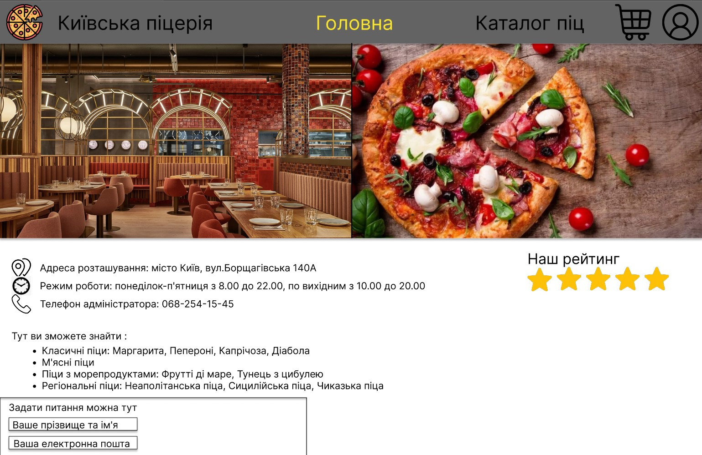
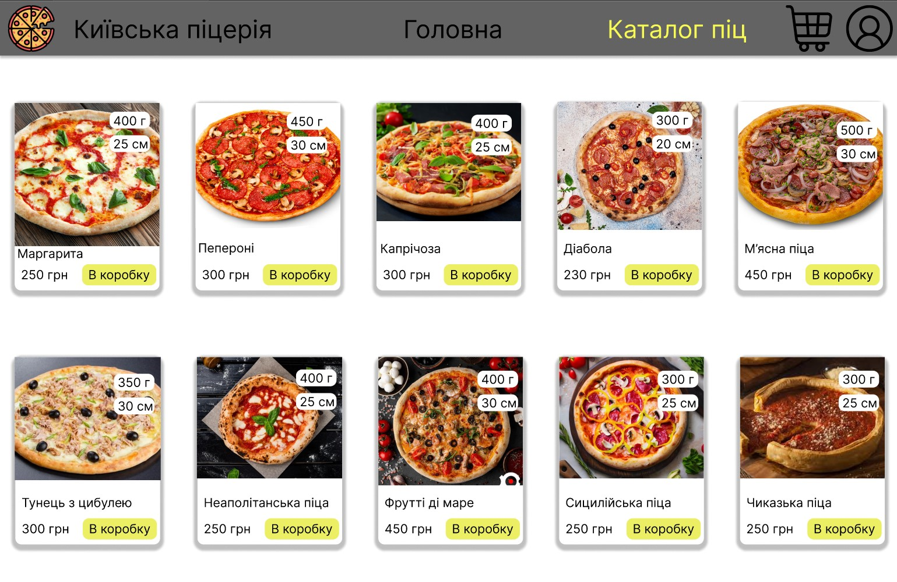

Звіти з лабораторних робіт
З дисципліни "Інтернет-технології та проєктування WEB-застосувань"
Студента групи ІС-31 Ужакова Нікіти Костянтиновича
| Лабораторна Робота №1 |
Лабораторна Робота №2 |
Лабораторна Робота №3 |
Лабораторна Робота №4 |
Лабораторна Робота №5 |
Лабораторна Робота №6 |
Лабораторна Робота №7 |
Лабораторна Робота №8 |
Лабораторна Робота №9 |
| Опис предметного середовища |
Веб-застосунок піцерії призначений для забезпечення зручного доступу користувачів до
інформації про піцерію та каталог доступних піц. Фронтенд представляє собою зручний
для користувачів інтерфейс. На головній сторінці відображається рекламна інформація
даної піцерії, тобто назва та адреса поточного розташування даного закладу, рейтинг,
режим роботи, телефон адміністратора, а також її короткий опис та фотографії. Також є
сторінка каталогу доступних піц, де знаходиться їх зображення та короткий опис, який
включає в себе назву, ціну, вагу та діаметр, а також можливість додати піцу до кошику
для подальшого оформлення замовлення. При натисканні на вибрану піцу відкриється сторінка
з більш детальним описом продукту, що включає в себе і інгредієнти.
Скріншот макету головної сторінкиСкріншот макету сторінки каталогу піц |
| Тема. Мета. Місце розташування ЛР №1 |
|
| Структура документа | |
| HTML-код таблиці | |
| HTML-код списку | |
| HTML-код зображення | |
| Висновки |